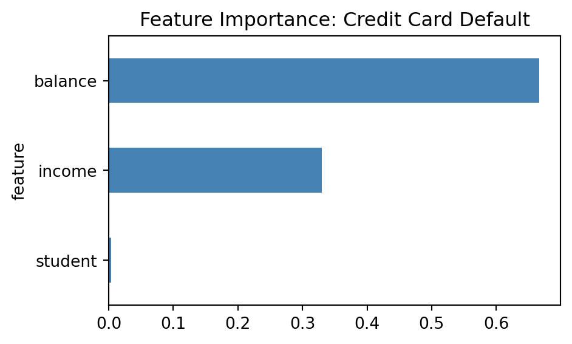
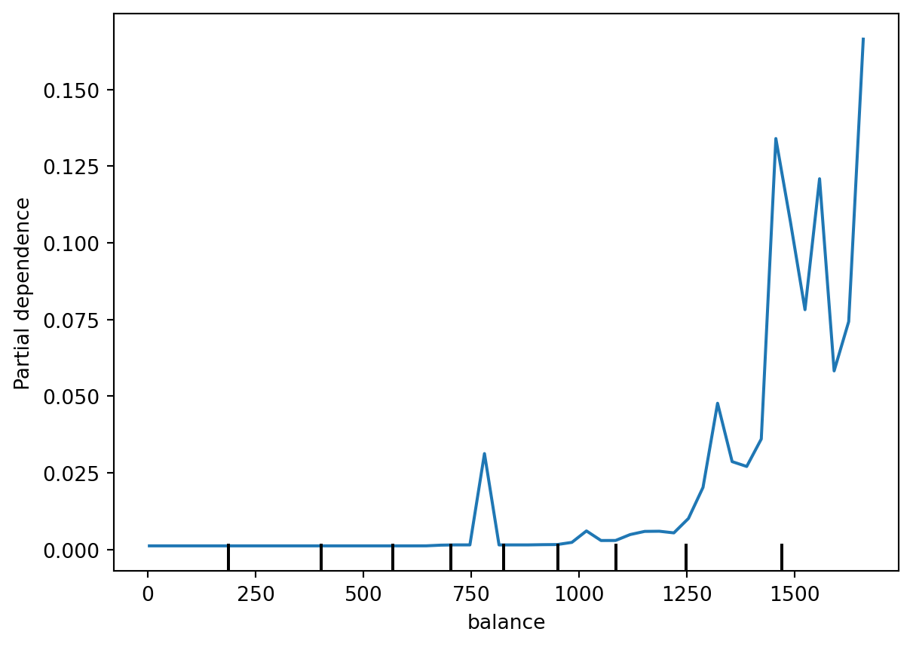
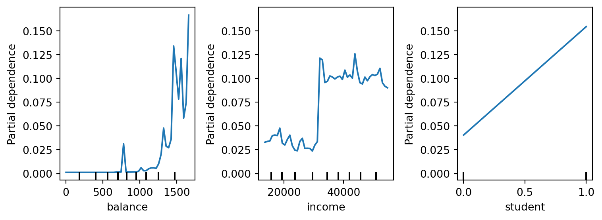

graph LR
A["Linear/Logistic<br/>Regression<br/><br/>Accuracy: ⭐⭐<br/>Interpretability: ⭐⭐⭐⭐⭐"] --> B["Decision<br/>Tree<br/><br/>Accuracy: ⭐⭐⭐<br/>Interpretability: ⭐⭐⭐"]
B --> C["Random<br/>Forest<br/><br/>Accuracy: ⭐⭐⭐⭐<br/>Interpretability: ⭐"]
C --> D["Deep Neural<br/>Network<br/><br/>Accuracy: ⭐⭐⭐⭐⭐<br/>Interpretability: ⚫"]
style A fill:#90EE90,stroke:#228B22,stroke-width:2px
style B fill:#FFD700,stroke:#DAA520,stroke-width:2px
style C fill:#FFA07A,stroke:#FF6347,stroke-width:2px
style D fill:#FF6347,stroke:#8B0000,stroke-width:2px
classDef default font-size:11pt
27 Understanding Feature Importance: Peeking Inside the Black Box
Throughout this course, you’ve progressed from simple, interpretable models like linear regression—where coefficients directly tell you how features affect predictions—to more powerful ensemble methods like random forests that combine hundreds of decision trees. As our models have grown more accurate, they’ve also become more opaque. A random forest might achieve 95% accuracy, but can you explain why it made a specific prediction? Which features drove that decision?
NoteExperiential Learning
Think about a recent important purchase decision you made—buying a car, choosing a phone, or selecting a restaurant. After making the decision, someone asked you “Why did you choose that one?”
Write down how you explained your decision. Did you rank the factors by importance? Did you mention some factors were more important than others? How confident were you in identifying what really mattered?
Now imagine you had a “black box” that made the decision for you and simply announced: “Buy this one.” How would you feel about trusting that recommendation without understanding the reasoning? By the end of this chapter, you’ll learn techniques for opening up machine learning “black boxes” to understand what’s happening inside.
This chapter bridges the gap between model accuracy and model interpretability. You’ll learn techniques for understanding which features drive your model’s predictions, how to quantify their importance, and how to visualize these insights effectively. These skills are crucial not just for building stakeholder trust, but also for debugging models, ensuring they’re learning the right patterns, and making better business decisions.
By the end of this chapter, you will be able to:
- Explain the accuracy-interpretability trade-off and why it matters for machine learning
- Articulate why feature importance is critical for building trust, debugging models, and making business decisions
- Distinguish between model-based (impurity-based) and model-agnostic (permutation) importance methods
- Calculate and interpret Gini/MSE importance from random forest models for both classification and regression
- Use permutation importance to validate and improve upon impurity-based rankings
- Create and interpret partial dependence plots to understand how features influence predictions
- Recognize common pitfalls including high-cardinality bias, correlation effects, and the causation fallacy
- Apply best practices for responsible feature importance analysis in real-world contexts
Note📓 Follow Along in Colab!
As you read through this chapter, we encourage you to follow along using the companion notebook in Google Colab (or another editor of your choice). This interactive notebook lets you run all the code examples covered here—and experiment with your own ideas.
👉 Open the Feature Importance Notebook in Colab.
27.1 From Transparency to Black Boxes
Think back to your first encounter with linear regression. Remember how straightforward it was to explain? “For each additional square foot, the house price increases by $45.” The model’s decision-making process was completely transparent—just a simple equation with coefficients you could point to and explain to anyone.
But as you’ve progressed through this course, you’ve learned increasingly powerful models. Decision trees can capture non-linear relationships and interactions. Random forests ensemble hundreds of trees to achieve even better accuracy. Each step forward in predictive power has come with a cost: these models are harder to explain.
The Journey from Glass Box to Black Box
Let’s trace this evolution with a concrete example: predicting customer churn for a telecommunications company.
Linear Regression (Logistic Regression for classification): The epitome of interpretability. Your model might look like:
\[ \text{Churn Probability} = \frac{1}{1 + e^{-(0.8 \times \text{MonthlyCharges} - 0.6 \times \text{Tenure} + 0.4 \times \text{NoTechSupport})}} \]
You can explain this to anyone: “Each $10 increase in monthly charges raises churn probability by about 8%. Each additional year of tenure reduces it by 6%.” The entire model fits on a single line.
Decision Tree: More complex, but still followable. You can trace the decision path:
Customer #1247:
MonthlyCharges > $70? YES
→ Tenure < 2 years? YES
→ No tech support? YES
→ PREDICTION: Will Churn (85% probability)You can tell this customer’s story. But what happens when your tree has 20 levels and 500 nodes? Following the logic becomes impractical.
Random Forest: The black box arrives. Your model doesn’t make one decision path—it makes 100 different decision paths and averages them. Tree #17 might focus on monthly charges and contract type. Tree #58 might prioritize customer service calls and payment method. When you ask “Why did you predict this customer will churn?”, the model essentially responds: “Because 87 out of 100 trees said so, based on 87 different combinations of factors.”
Accurate? Yes. Explainable? Not easily.
Visualizing the Trade-Off
This trade-off between accuracy and interpretability is fundamental to machine learning:
The left side shows simpler models that are easy to understand but may miss complex patterns. The right side shows sophisticated models that capture subtle relationships but resist simple explanation.
Why This Trade-Off Exists
The reason is straightforward: real-world relationships are often complex, and capturing complexity requires complex models.
Linear regression assumes every relationship is a straight line. If you’re predicting house prices, it assumes one extra square foot has the same impact whether you’re going from 800 to 801 square feet (tiny apartment → small apartment) or 4,000 to 4,001 square feet (mansion → slightly bigger mansion). That assumption is probably wrong.
Decision trees can capture threshold effects: “Below 1,200 square feet, each additional square foot adds $100/sqft. Above 1,200 square feet, it only adds $50/sqft.” Much more realistic.
Random forests can capture interactions: “In urban areas, an extra bedroom dramatically increases value, but in rural areas it barely matters.” This is closer to how the world actually works—but now you’re combining hundreds of these complex decision rules.
The Business Dilemma
This creates a real challenge: stakeholders want both accuracy AND explanation. Consider this all-too-common conversation:
TipA Typical Business Meeting
You: “Great news! Our new Random Forest model predicts customer churn with 94% accuracy—up from 78% with our old logistic regression.”
VP of Marketing: “Excellent! So which customers should we focus our retention efforts on?”
You: “The model identified 500 high-risk customers. Here’s the list.”
VP: “Perfect. Now, what’s making them high risk? What should we do differently to retain them?”
You: “Well… the model doesn’t exactly tell us that in a straightforward way…”
VP: “What do you mean? How can it predict churn without knowing what causes churn?”
You: “It does know—sort of. The patterns are just… distributed across hundreds of decision trees…”
VP (skeptically): “So you’re telling me to spend $200,000 on retention campaigns, but you can’t explain why these specific customers are at risk?”
This is the moment where many data scientists realize that accuracy alone isn’t enough. The model’s predictions are only valuable if stakeholders trust them, act on them, and know how to intervene. You need interpretability.
This is where feature importance becomes crucial—it lets us peek inside the black box and answer those “why” questions, even when the model itself is complex. We can’t always have perfect interpretability, but we can have enough insight to make informed business decisions and build stakeholder confidence.
27.2 Why Feature Importance Matters
Now that we understand the interpretability challenge, let’s explore why solving it matters so much. Feature importance isn’t just an academic exercise—it’s often the difference between a model that sits on a shelf and one that drives real business value.
Building Trust: “Show Me Why”
Imagine you’ve built a model that predicts which sales leads are most likely to convert. Your sales team is skeptical—they’ve seen “data science magic” before that didn’t pan out. You present your results:
NoteTwo Ways to Present Your Model
Approach 1 (without feature importance): > “This model predicts conversion with 89% accuracy. Here are the 200 leads you should prioritize.”
Approach 2 (with feature importance): > “This model achieves 89% accuracy by focusing on three key factors: leads from companies with 100+ employees (35% importance), leads who’ve visited our pricing page 3+ times (28% importance), and leads who engage with technical documentation (22% importance). Here are the 200 leads that score highest on these criteria.”
Which presentation would you trust more? The second one doesn’t just tell you what to do—it explains why, giving you the context to understand, validate, and act on the recommendation.
This applies across industries:
- Healthcare: “Your model predicts high readmission risk—but why? Is it age, severity of diagnosis, or lack of follow-up care? The hospital can only intervene on the last one.”
- Finance: “The model denied this loan—on what basis? Regulators require you to explain decisions, especially when they affect people’s lives.”
- E-commerce: “The recommendation engine suggests these products—but are the recommendations based on genuine preferences or just what’s profitable for us?”
Supporting Better Decisions: From Correlation to Action
Feature importance helps translate statistical patterns into business strategy. Consider a real-world example:
You build a churn prediction model for a subscription service. The model works great—92% accuracy! But what do you actually do with that?
Feature importance analysis reveals:
- Contract type (importance: 0.32): Month-to-month contracts churn at 5x the rate of annual contracts
- Customer service calls (importance: 0.24): Customers with 4+ calls in the last month are at high risk
- Automatic payment (importance: 0.18): Manual payment customers churn at 2x the rate
- Monthly charges (importance: 0.14): Customers paying over $80/month are at higher risk
- Everything else (importance: 0.12 combined)
Now you can create an action plan:
| Insight | Business Action | Expected Impact |
|---|---|---|
| Month-to-month contracts are risky | Offer incentives to convert to annual plans | Reduce churn in highest-risk segment |
| Multiple service calls signal problems | Proactive outreach after 2nd call | Intervene before frustration peaks |
| Manual payment is a weak signal | Promote autopay with small discount | Easy win for moderate-risk customers |
| High charges correlate with churn | Review pricing tiers; offer customization | May need product, not just retention, fix |
Without feature importance, you’d just have a list of at-risk customers with no insight into why they’re at risk or what to do about it.
Feature Selection: Simplicity from Complexity
Sometimes feature importance reveals that simpler is better. You might discover that:
- Out of 50 features you’re collecting, only 8 drive meaningful predictions
- The other 42 add noise and complexity without improving accuracy
- Collecting those 42 features costs you time, money, and introduces more opportunities for data quality issues
Real example: A retail company was collecting 73 customer attributes for their purchase prediction model. Feature importance analysis showed that 12 features provided 94% of the predictive signal. They simplified data collection to focus on those 12, reducing database costs, improving data quality (fewer fields to validate), and actually improving model performance by reducing noise.
Debugging: When Models Learn the Wrong Lessons
Feature importance is your early warning system for model problems. Here are real scenarios where feature importance caught critical issues:
Data Leakage Caught Just in Time: A hospital built a readmission prediction model that achieved suspiciously high accuracy—97%. Feature importance revealed that “room_number” was the top predictor. Turns out, the hospital systematically assigned high-risk patients to rooms near the nurses’ station. The model learned to predict readmissions based on room assignment, not actual medical risk factors. Without feature importance, they might have deployed a fundamentally broken model.
Proxy Discrimination Revealed: A hiring model showed that “years_of_experience” and “leadership_roles” were top predictors—both seem reasonable. But deeper analysis revealed these features were proxies for gender in their historical data (due to past discrimination). The model was perpetuating bias. Feature importance flagged the issue; additional fairness analysis confirmed it.
Temporal Confusion: An e-commerce model to predict purchase likelihood gave high importance to “time_spent_on_checkout_page.” That seems logical until you realize: people only get to the checkout page after deciding to buy. The model was learning from a consequence of the decision, not a cause. Feature importance made this circular logic visible.
Regulatory Compliance and Ethical AI
In many industries, explainability isn’t optional—it’s legally required.
Finance: The Fair Credit Reporting Act (FCRA) requires you to provide “adverse action notices” explaining why credit was denied. “The model said so” isn’t acceptable; you need to cite specific factors.
Healthcare: Models influencing patient care must be explainable to satisfy medical ethics standards and legal liability concerns.
Employment: Using AI in hiring decisions increasingly requires transparency about what factors influence decisions.
European Union: The GDPR includes a “right to explanation” for automated decisions that significantly affect individuals.
Beyond legal requirements, there’s an ethical imperative: systems that affect people’s lives should be understandable. Feature importance is a key tool for responsible AI development.
The Meta-Lesson: Understanding What Your Model Learned
Perhaps most importantly, feature importance teaches you about your business. When you see what actually predicts outcomes, you often learn surprising truths:
- Marketing teams discover that customer service quality predicts retention better than promotional discounts
- Product teams learn that simple reliability matters more than flashy features
- Operations teams find that small process delays compound into major customer dissatisfaction
Your model has analyzed thousands or millions of examples. Feature importance helps you extract those lessons in a form you can understand, validate, and act upon. That’s why it matters.
27.3 Types of Feature Importance
Before diving into specific techniques, it helps to understand that “feature importance” isn’t a single concept—there are fundamentally different ways to measure how much a feature matters.
Model-Based vs. Model-Agnostic
The most important distinction is whether importance is tied to a specific model type:
Model-Based Importance: Derived from the model’s internal structure. For example, how much each feature reduces impurity in a random forest’s decision trees. These methods are:
- Fast to compute (already part of model training)
- Specific to certain model types
- Sometimes biased toward particular feature types
Model-Agnostic Importance: Measures importance by observing how predictions change when features are altered. These methods:
- Work with any model type (linear, tree, neural network, etc.)
- Generally more reliable
- Require extra computation
Global vs. Local Importance
Another key distinction is the scope of importance:
Global Importance: How important is this feature across all predictions? “Income is the #1 driver of loan default in our model.”
Local Importance: How important is this feature for a specific prediction? “For this particular customer, high credit utilization was the main reason for loan denial.”
Comparison of Common Methods
| Type | Example Methods | Model Dependence | Description |
|---|---|---|---|
| Model-based | Gini importance (Random Forest) | Tree-based only | Measures how much each feature reduces impurity across all tree splits |
| Model-based | Linear coefficients | Linear models only | The weight/coefficient for each feature in the equation |
| Model-agnostic | Permutation importance | Any model | Measures performance drop when feature values are randomly shuffled |
| Model-agnostic | SHAP values | Any model | Game-theory approach to attribute prediction to each feature |
| Model-agnostic | LIME | Any model | Approximates model locally with interpretable surrogate |
In this chapter, we’ll focus on the two most practical techniques for your current skill level: Gini importance (model-based, for random forests) and permutation importance (model-agnostic). These give you powerful tools without requiring advanced mathematics.
Later, we’ll briefly introduce partial dependence plots, which help you understand not just which features matter, but how they influence predictions.
27.4 Feature Importance in Random Forests
Let’s start with the technique you’ll use most often with tree-based models: impurity-based feature importance (also called mean decrease in impurity).
Building on What You Already Know
Remember when we covered decision trees? Each split in a tree is chosen to maximize improvement—reducing Gini impurity for classification or MSE for regression. The tree algorithm evaluates every possible split and picks the one that gives the biggest reduction.
Feature importance simply aggregates this information: it tracks which features created the best splits across all the trees in your forest.
Here’s the intuition: if MonthlyCharges is frequently chosen for splits that substantially reduce Gini impurity (in classification) or MSE (in regression), then MonthlyCharges gets a high importance score. If CustomerID rarely gets used for splits (because it doesn’t help separate classes or reduce variance), it gets a low importance score.
How It Works
The calculation is straightforward:
- Track improvement: For every split in every tree, record how much it reduced Gini (for classification) or MSE (for regression)
- Credit the feature: Give that reduction amount to whichever feature was used for the split
- Weight by node size: Splits near the top of trees affect more observations, so they count more
- Sum across all trees: Add up all the reductions each feature achieved across the entire forest
- Normalize: Scale the scores so they sum to 1.0
The same logic applies to regression—you’re just measuring MSE reduction instead of Gini reduction. The mechanics are identical.
Extracting Importance from Scikit-Learn
Whether you’re using RandomForestClassifier or RandomForestRegressor, scikit-learn automatically calculates feature importance during training. Let’s see this in action with the Default dataset, where we’ll predict whether credit card customers default on their payments.
Show data preparation code
# Load and prepare the Default dataset
import pandas as pd
import numpy as np
from ISLP import load_data
from sklearn.model_selection import train_test_split
from sklearn.ensemble import RandomForestClassifier
# Load data
Default = load_data('Default')
# Convert 'default' and 'student' to binary (Yes=1, No=0)
Default['default'] = (Default['default'] == 'Yes').astype(int)
Default['student'] = (Default['student'] == 'Yes').astype(float) # float for PDP compatibility
# Prepare features and target
X = Default[['student', 'balance', 'income']].astype(float) # Ensure all features are float
y = Default['default']
# Train/test split
X_train, X_test, y_train, y_test = train_test_split(
X, y, test_size=0.3, random_state=42, stratify=y
)Now that we have are data ready let’s train our model and extract the feature importance:
# Train random forest
rf_model = RandomForestClassifier(n_estimators=100, random_state=42)
rf_model.fit(X_train, y_train)
# Extract feature importance
importance_scores = rf_model.feature_importances_
# Create a DataFrame for easy viewing
importance_df = pd.DataFrame({
'feature': X_train.columns,
'importance': importance_scores
}).sort_values('importance', ascending=False)
print(importance_df) feature importance
1 balance 0.666104
2 income 0.329728
0 student 0.004168The .feature_importances_ attribute gives you normalized scores that sum to 1.0. Here we can see that balance (the customer’s credit card balance) is by far the most important predictor of default, followed by income, with student status contributing very little.
Visualizing Importance
Bar charts are the most common way you’ll see feature importance communicated. They make it easy to quickly identify which features matter most and compare their relative importance.
# Create horizontal bar chart (sorted so largest is at top)
importance_df.sort_values('importance').set_index('feature')['importance'].plot(
kind='barh',
figsize=(5, 3),
color='steelblue',
title='Feature Importance: Credit Card Default'
)

Interpreting the Results
Feature importance scores are more than just numbers—they’re a window into what your model learned and whether it’s learning the right things. When examining importance scores, ask yourself these critical questions:
WarningWhen Something Seems Off
If your feature importance results seem strange, counterintuitive, or raise red flags (like ID variables being important), don’t ignore it. These are often symptoms of deeper problems:
- Revisit your features: Are you including variables that shouldn’t be available at prediction time? Are there data quality issues?
- Check your feature engineering: Did scaling, encoding, or transformations introduce unintended artifacts?
- Question the model choice: Is a random forest appropriate for this problem, or would a simpler model be better?
Feature importance is a diagnostic tool—use it to validate that your model is learning what you intended it to learn.
Limitations of Impurity-Based Importance
Impurity-based importance (whether using Gini, Entropy, or MSE) is fast and convenient, but has known biases:
Favors high-cardinality features: Features with many unique values (like continuous variables) tend to rank higher than low-cardinality features (like binary variables), even when the binary feature is more predictive. A continuous variable like
age(with 60+ unique values) often outranks a binary feature likehas_warrantysimply because it has more possible split points.Biased with correlated features: When features are correlated, importance gets distributed among them unpredictably. For example,
annual_incomeandmonthly_incomemight both show moderate importance, even though they’re measuring essentially the same thing.Training-set specific: Calculated on training data, so it reflects what helped during training, not necessarily what generalizes. A feature might rank highly because it helped the model overfit to training data quirks.
No statistical significance: You get importance scores, but no indication of whether they’re meaningfully different from random chance, especially with small datasets.
These limitations apply equally to classification (Gini/Entropy) and regression (MSE reduction) forests. For these reasons, it’s wise to also check permutation importance, which we’ll cover next.
27.5 Permutation Importance: A More Reliable Alternative
While impurity-based importance is fast and convenient, it has biases we discussed earlier—particularly favoring high-cardinality features and struggling with correlated variables. More importantly, it only works with tree-based models. What if you want to understand feature importance for a logistic regression, a neural network, or any other model type?
This is where permutation importance shines. It’s a model-agnostic approach that works with any model and directly measures how much each feature contributes to actual prediction performance.
The Core Idea: Break It and See What Happens
The logic behind permutation importance is beautifully simple: if a feature is important, breaking its relationship with the target should hurt model performance.
Here’s the intuition: imagine you’ve built a model to predict credit card default using balance, income, and student status. If balance is truly important, what happens if you randomly scramble the balance values while keeping everything else the same? The model’s predictions should get much worse—customers who actually have low balances might now be assigned high balance values, and vice versa.
But if student status doesn’t actually help predictions, shuffling it should barely affect performance. The model wasn’t really using that information anyway.
This is exactly what permutation importance measures: the drop in performance when you shuffle each feature.
How It Works
The algorithm is straightforward:
Calculate baseline performance: Evaluate your model on the test set with real, unshuffled data (e.g., accuracy = 0.92)
For each feature, one at a time:
- Randomly shuffle that feature’s values, breaking its relationship with the target
- Re-calculate performance with the shuffled feature (e.g., accuracy drops to 0.78)
- Record the performance drop (0.92 - 0.78 = 0.14 importance for this feature)
- Restore the original values before moving to the next feature
Repeat the shuffling multiple times (usually 10-30 repetitions) to get stable estimates, since random shuffling introduces variability
Report the average performance drop as the feature’s importance
Always use a held-out test set, not training data. You want to measure what matters for generalization, not what the model memorized during training.
Implementation with Scikit-Learn
Scikit-learn makes calculating permutation importance easy with the permutation_importance function. Let’s apply it to our Default dataset model:
from sklearn.inspection import permutation_importance
# Calculate permutation importance on test set
perm_importance = permutation_importance(
rf_model, # Our trained random forest
X_test, # Test features (held-out data)
y_test, # Test labels
n_repeats=10, # Shuffle each feature 10 times
random_state=42,
scoring='accuracy' # For classification; use 'r2' for regression
)
# Extract results into a clean DataFrame
perm_df = pd.DataFrame({
'feature': X_test.columns,
'importance_mean': perm_importance.importances_mean,
'importance_std': perm_importance.importances_std
}).sort_values('importance_mean', ascending=False)
print(perm_df) feature importance_mean importance_std
1 balance 0.023967 0.001224
0 student 0.003133 0.001565
2 income -0.000900 0.001461The importances_mean column shows the average performance drop across the 10 shuffles, and importances_std tells you how variable that estimate is. A high standard deviation suggests the importance is unstable—possibly because the feature interacts with others in complex ways.
Comparing Impurity-Based vs. Permutation Importance
One of the most valuable practices is comparing both methods side-by-side. They often agree on the most important features, but discrepancies can reveal important insights.
# Merge both importance measures for comparison
comparison = pd.merge(
importance_df.rename(columns={'importance': 'impurity_based'}),
perm_df[['feature', 'importance_mean']].rename(columns={'importance_mean': 'permutation'}),
on='feature'
)
print(comparison) feature impurity_based permutation
0 balance 0.666104 0.023967
1 income 0.329728 -0.000900
2 student 0.004168 0.003133What to look for:
Rankings: Both methods rank
balanceas the most important feature, which is reassuring. However, notice the magnitude difference—impurity-based gives it 0.67 importance while permutation gives only 0.024.Income discrepancy:
incomeshows moderate impurity-based importance (0.33) but essentially zero permutation importance (-0.0009, effectively zero). This is a significant disagreement! It suggests that while the trees useincomefor splits during training, shuffling it on the test set doesn’t actually hurt predictions much.Student status: Both methods agree this feature has minimal importance (0.004 vs 0.003).
What explains these discrepancies?
This is a textbook example of the high-cardinality bias we discussed earlier. Both balance and income are continuous variables with many unique values, while student is binary (only two values). Impurity-based importance naturally favors continuous features because they offer more split points.
Permutation importance tells a different story: balance genuinely helps test-set predictions (0.024 drop when shuffled), but income doesn’t (-0.0009 actually suggests a tiny improvement when shuffled, though this is likely just noise). This suggests the trees might be using income in complex ways that don’t generalize well, or it’s redundant given balance.
ImportantThe Takeaway
When methods disagree this much, trust permutation importance more—especially when the discrepancy involves continuous vs. categorical features. For this problem, balance is clearly the dominant signal.
When to Use Each Method
Both approaches have their place. Here’s practical guidance on when to use each:
Use Permutation Importance when:
- Working with any model type: Logistic regression, neural networks, gradient boosting—permutation importance works with all of them
- You need reliable rankings: Especially important when features are correlated or have different cardinalities
- The stakes are high: When decisions based on importance have significant business or ethical implications, use the more robust method
- You’re validating results: Always good to check permutation importance to confirm impurity-based rankings
Use Impurity-Based Importance when:
- You need quick feedback: It’s calculated during training at essentially no extra cost—perfect for rapid iteration
- You’re doing initial exploration: Great for quickly identifying obviously important features before deeper analysis
- Computational resources are limited: Permutation importance requires many additional predictions, which can be slow with large datasets or complex models
- You’re specifically analyzing tree behavior: Understanding which features the trees actually split on, not just which features help predictions
ImportantBest Practice
Use impurity-based importance for quick checks during model development, then validate your conclusions with permutation importance before making final decisions or reporting to stakeholders.
27.6 Exploring Prediction Behavior Across Variables
Feature importance tells you which features matter, but not how they influence predictions. Does increasing income linearly increase loan approval probability? Is there a threshold effect? This is where partial dependence plots (PDPs) become valuable.
What Partial Dependence Plots Show
A PDP displays the average predicted outcome as you vary one feature while holding all others at their observed values. It answers: “On average, how does the prediction change as this feature changes?”
For example, a PDP for credit_score in a loan model might show:
- Below 600: ~80% predicted default rate
- 600-700: Default rate drops steadily to ~40%
- Above 700: Default rate levels off around ~15%
This reveals not just that credit score matters (importance already told you that), but exactly how it matters.
Creating Partial Dependence Plots
Scikit-learn’s PartialDependenceDisplay makes it easy to create PDPs for any trained model. Let’s visualize how balance affects default probability in our model:
from sklearn.inspection import PartialDependenceDisplay
# Create PDP for balance (our most important feature)
PartialDependenceDisplay.from_estimator(
rf_model,
X_train,
features=['balance'],
grid_resolution=50
)

This plot reveals a clear threshold effect: default probability stays near zero for balances below ~$1,200, then rises steeply as balance increases. Notice the vertical lines at the bottom (called a “rug plot”)—these show where actual customer balances fall in the dataset. Most customers have balances below $1,500, which is why the plot gets noisier above that point (fewer data to average over).
We can also create PDPs for multiple features at once to compare their effects:
import matplotlib.pyplot as plt
# Create figure with custom size (width, height in inches)
fig, ax = plt.subplots(1, 3, figsize=(8, 3))
# Create PDPs for all features
PartialDependenceDisplay.from_estimator(
rf_model,
X_train,
features=['balance', 'income', 'student'],
grid_resolution=50,
ax=ax
)
plt.tight_layout()

Interpreting PDPs
When reading partial dependence plots, look for these common patterns. Let’s use our Default dataset examples to illustrate:
Threshold effects (balance plot): The balance PDP is a textbook example—default probability remains essentially flat at near-zero for balances below $1,200, then climbs steeply. This tells you there’s a critical balance threshold where risk accelerates. From a business perspective, this suggests focusing credit monitoring and intervention efforts on customers approaching or exceeding $1,200 in balance.
Data density matters: Notice the rug plot (vertical lines at the bottom of each chart)—these show where actual observations fall. The balance plot gets jagged above $1,500 because fewer customers have such high balances, making the average less stable. Always check data density; interpretations are less reliable in sparse regions.
Threshold with noise (income plot): The income PDP reveals an interesting pattern—default probability stays low (around 2.5-5%) for incomes below ~$30,000, then jumps sharply to around 10-12.5% as income exceeds $30,000-$35,000. This is counterintuitive: higher income associated with higher default risk? This apparent paradox highlights an important lesson about correlation vs. causation and feature interactions. The pattern likely reflects that, conditional on having accumulated high credit card balances, higher-income customers are slightly more likely to default—perhaps because they’re more likely to have multiple credit lines or higher total debt. However, permutation importance was near-zero for income because this relationship is weak and doesn’t improve predictions much once you already know the balance. The noisiness of the plot also suggests limited data in higher income ranges (note the sparse rug plot).
Linear relationships (student plot): The student PDP shows a diagonal line from non-student (0) to student (1), with default probability rising from about 4% to 15%. This is interesting—it suggests being a student is associated with higher default risk. However, remember that permutation importance rated this feature as nearly worthless (~0.003). How can both be true? This is likely because the effect is real but small relative to balance, and most predictions are dominated by balance regardless of student status. When balance is very high or very low, student status doesn’t change the overall prediction much.
Non-monotonic patterns: Sometimes PDPs go up then down, or show more complex curves (e.g., moderate engagement optimal, very high suggests spam behavior). We don’t see this in the Default data, but watch for these in more complex business problems—they often reveal interesting threshold effects or saturation points.
WarningImportant Limitations
PDPs assume feature independence, which can be misleading with correlated features. For example:
- If
ageandyears_employedare correlated, showing “age = 25 with years_employed = 30” doesn’t make sense - The PDP averages over impossible combinations
Despite this, PDPs remain one of the most practical interpretability tools for understanding feature effects.
27.7 Limitations and Pitfalls
Throughout this chapter, we’ve seen how powerful feature importance can be for understanding models. But like any analytical tool, it has limitations. Being aware of these pitfalls helps you use feature importance responsibly and interpret results correctly.
When Feature Importance Can Mislead You
Feature importance is powerful, but it’s not foolproof. Here are the most common ways it can lead you astray. Click on each to learn more about the problem and what to do about it:
WarningCorrelated Features Dilute Importance
We saw this clearly in our Default dataset: balance and income are likely correlated (people with high balances may have different income profiles), and impurity-based importance gave income a moderate score (0.33) even though permutation importance showed it barely helps predictions.
The problem: When features are correlated, importance gets split among them in unpredictable ways. If you had monthly_sales, quarterly_sales, and annual_sales all in your model, none might rank highly individually even though sales is the key driver.
What to do:
- Remove obvious redundancies before modeling
- Group correlated features conceptually when interpreting (“sales-related features are important”)
- Look for cases where permutation importance is much lower than impurity-based importance—often a sign of correlation issues
WarningThe Cardinality Trap
Our Default dataset demonstrated this perfectly: continuous features (balance with 1000+ unique values, income with 500+ values) dominated impurity-based importance, while the binary student feature barely registered—even though the PDP showed it had a real effect.
The problem: Tree-based importance inherently favors features with many unique values because they offer more possible split points, not because they’re more predictive.
What to do:
- Always compare with permutation importance
- Don’t dismiss low-cardinality features based solely on impurity-based scores
- Be extra skeptical when continuous features dominate and categorical features vanish
WarningImportance Doesn’t Equal Causation
This is perhaps the most dangerous assumption. Consider this scenario: a model predicts hospital readmissions and finds that “number_of_medications” is highly important. You might conclude: “Let’s reduce prescriptions to prevent readmissions!” But the truth is likely reversed—sicker patients need more medications AND are more likely to be readmitted. The medications aren’t causing readmissions; they’re a marker of severity.
Classic example: Ice cream sales are “important” for predicting drowning deaths. But ice cream doesn’t cause drownings—both are driven by hot summer weather.
What to do:
- Never assume important features are causal without additional evidence
- Use domain expertise to distinguish correlation from causation
- Consider whether the relationship makes logical sense or if there’s a lurking variable
WarningTraining Set Overfitting
Impurity-based importance is calculated entirely on training data. If your model overfits, it might split on noise patterns that don’t generalize, making random features appear important.
Example: Your model might discover that customers whose names start with ‘Q’ happened to churn more often in the training set (pure chance with a small sample). Impurity-based importance would credit this, but permutation importance on test data would reveal it’s meaningless.
What to do:
- Trust permutation importance on test data more than training-based measures
- If a feature has high training importance but low test importance, it’s likely overfit
WarningSmall Data, Big Noise
With limited data, importance scores become unstable. Retrain on a slightly different sample, and feature rankings might shuffle dramatically.
What to do:
- Use cross-validation to check importance stability across different data splits
- Report confidence intervals (permutation importance provides
importances_stdfor this) - Be humble about conclusions when working with small datasets
Practical Guideposts for Trustworthy Interpretation
Rather than a rigid checklist, think of these as questions to ask yourself:
TipDid I use multiple importance methods?
Comparing impurity-based and permutation importance catches many issues. When they agree strongly (like both saying balance is dominant), you can be confident. When they disagree (like with income in our Default example), investigate why.
TipAm I calculating importance on the right data?
For permutation importance, always use held-out test data. You want to know what matters for generalization, not what the model memorized.
TipDo the important features pass the “common sense” test?
If customer_id is important, something’s wrong. If balance is important for credit default, that makes sense. Trust your domain knowledge.
TipAm I confusing “important” with “actionable”?
A feature can be important for predictions but impossible to change (like age). Meanwhile, a less important feature might be highly actionable (like email response time). Importance tells you what drives predictions; business strategy determines what to do about it.
TipDid I check for data leakage?
If “days_until_churn” is important in a churn prediction model, you’re leaking the future into your features. If “room_number” predicts readmissions, investigate why before trusting it.
WarningRemember: Description, Not Prescription
Feature importance methods are descriptive—they tell you what patterns the model found in the data. They are not prescriptive—they don’t tell you what those patterns mean, whether they’re causal, or what actions to take.
A high importance score means “the model uses this feature heavily in its predictions,” not “changing this feature will change outcomes” or “this feature causes the target variable.”
Always pair importance analysis with critical thinking, domain expertise, and—when stakes are high—causal inference methods.
27.8 Beyond the Basics: Toward Explainable AI
The techniques in this chapter—Gini importance, permutation importance, and partial dependence plots—give you a solid foundation for understanding model behavior. But the field of explainable AI (XAI) has developed more sophisticated methods that you’ll likely encounter as you advance in your data science career. While these are beyond the scope of this introductory course, it’s valuable to know they exist and when you might need them.
NoteSHAP (SHapley Additive exPlanations)
What it does: Uses game theory to calculate how much each feature contributed to moving a prediction away from the average prediction, providing both global and local explanations.
Learn more: SHAP documentation
Python package: shap (GitHub)
When to use: When you need mathematically rigorous feature attributions that are consistent across all predictions, especially for explaining individual high-stakes decisions.
NoteLIME (Local Interpretable Model-Agnostic Explanations)
What it does: Explains individual predictions by fitting a simple, interpretable model (like linear regression) locally around that specific prediction.
Learn more: LIME documentation
Python package: lime (GitHub)
When to use: When you need to explain specific predictions in a way that’s intuitive to non-technical stakeholders, working with any model type.
NoteCounterfactual Explanations
What it does: Identifies the minimal changes to input features that would flip a prediction to a different outcome (e.g., “If your income were $5,000 higher, the loan would be approved”).
Learn more: DiCE (Diverse Counterfactual Explanations)
Python package: dice-ml (Documentation)
When to use: When stakeholders need actionable insights about what would change a prediction, particularly valuable in lending, hiring, and healthcare contexts.
NoteAnchors
What it does: Finds sufficient conditions (rules) that “anchor” a prediction—features that, when present, guarantee the prediction regardless of other feature values.
Learn more: Anchors: High-Precision Model-Agnostic Explanations
Python package: Part of alibi package (Documentation)
When to use: When you need to identify robust rules that ensure certain predictions, useful for validating model behavior in critical applications.
The core principle remains the same: powerful models are most useful when we can explain their behavior. As you advance in your career and encounter high-stakes applications, these advanced methods become essential tools for responsible AI development.
27.9 Summary and Reflection
This chapter has equipped you with practical tools for understanding what drives your machine learning models’ predictions. Here’s what you’ve learned:
The Core Challenge: As you’ve progressed from linear regression through decision trees to random forests, your models have become more accurate but less interpretable. A random forest combining hundreds of trees resists simple explanation—but stakeholders still need to understand why predictions are being made.
Why Feature Importance Matters: Beyond satisfying curiosity, feature importance serves critical purposes:
- Building trust with stakeholders by explaining model decisions
- Supporting action by translating predictions into business strategies
- Debugging models to catch data leakage, bias, and logical errors
- Meeting regulatory requirements in finance, healthcare, and other high-stakes domains
- Learning about your business by discovering what actually drives outcomes
Two Complementary Approaches:
Impurity-Based Importance (Gini/MSE): Built into random forests, measuring how much each feature reduces Gini impurity (classification) or MSE (regression) across tree splits. Fast and convenient, but biased toward high-cardinality features and calculated on training data.
Permutation Importance: Model-agnostic method that measures performance drop when shuffling each feature on test data. More reliable and works with any model type, though computationally more expensive.
Best Practice: Use impurity-based importance for quick iteration during development, then validate with permutation importance before final decisions.
Understanding How Features Work: Partial dependence plots (PDPs) go beyond which features matter to show how they influence predictions—revealing threshold effects, linear relationships, and non-monotonic patterns. Through the Default dataset, you saw how balance exhibits a clear threshold at ~$1,200, while income showed counterintuitive patterns that required careful interpretation.
Critical Pitfalls to Avoid:
- Correlated features dilute importance unpredictably
- High-cardinality bias makes continuous features dominate tree-based importance
- Importance ≠ causation—correlation doesn’t imply you can change outcomes by manipulating features
- Training set overfitting can make random noise appear important
- Small datasets produce unstable importance scores
The Path Forward: While this chapter focused on practical methods (Gini, permutation, PDPs), advanced techniques like SHAP, LIME, and counterfactual explanations offer even deeper insights for high-stakes applications. The fundamental principle remains constant: models are most valuable when we can explain their behavior.
TipReflection Question
Think about a prediction model you might build in your field. Your model achieves 92% accuracy, and your manager asks: “Which variables most influenced your model’s predictions—and why?”
How would you answer using the techniques from this chapter? What combination of methods would you use, and how would you communicate the results to a non-technical stakeholder?
27.10 Knowledge Check
NoteYour Turn: Comprehensive Feature Importance Analysis
Apply everything you’ve learned to analyze a real dataset.
Your Tasks:
Data Selection: Choose a classification or regression dataset (Ames housing, customer churn, or one of your choice)
Model Training: Train a Random Forest model with appropriate train/test split
Multiple Importance Methods:
- Extract and visualize Gini importance
- Calculate and visualize permutation importance on test data
- Compare the two methods—do they agree? Where do they disagree?
Partial Dependence:
- Create PDPs for the top 3-4 most important features
- Describe the relationships you observe (linear, threshold, diminishing returns, etc.)
Critical Analysis:
- Identify any suspicious patterns (data leakage, spurious correlations, etc.)
- Check for correlated features that might be splitting importance
- Validate that important features make domain sense
Business Communication:
- Write a one-page summary for a non-technical stakeholder explaining:
- Which 3-5 features drive predictions most strongly
- How these features influence the outcome (using PDP insights)
- What actions the business might take based on these insights
- Any caveats or limitations in the interpretation
- Write a one-page summary for a non-technical stakeholder explaining:
Bonus Challenge: Compare feature importance from your Random Forest with coefficients from a Logistic Regression (for classification) or Linear Regression (for regression) on the same data. What do the differences tell you about the patterns each model learned?
27.11 End of Chapter Exercises
These exercises revisit the random forest models you built in Chapter 26. Now you’ll apply feature importance techniques to understand which features drive your predictions and how they influence outcomes. This is where the models you built previously become truly actionable!
NoteExercise 1: Understanding Baseball Salary Predictions
In Chapter 26, you built random forest models to predict baseball player salaries using the Hitters dataset. Now let’s understand what drives those predictions.
Recall your best model from Chapter 26 Exercise 1 (likely the tuned random forest with features: Years, Hits, RBI, Walks, PutOuts).
Your Tasks:
- Extract and Visualize Impurity-Based Importance:
- Use
.feature_importances_from your trained random forest - Create a horizontal bar chart showing feature importance
- Which feature dominates salary predictions?
- Does this align with baseball domain knowledge?
- Use
- Calculate Permutation Importance:
- Use
permutation_importance()on your test set - Calculate with
n_repeats=10andscoring='r2' - Create a comparison table or chart showing both importance types
- Do the two methods agree on the top features? Where do they disagree?
- Use
- Investigate Discrepancies:
- If impurity-based and permutation importance disagree, explain why
- Consider: Are some features continuous vs. categorical?
- Are any features correlated (e.g.,
HitsandRBImight be)? - Which importance measure do you trust more for this dataset?
- Partial Dependence Analysis:
- Select the top 5 most important features (based on permutation importance)
- Create partial dependence plots for each feature
- Describe the relationship between each feature and predicted salary:
- Is it linear or non-linear?
- Are there threshold effects? (e.g., “After X years, salary increases accelerate”)
- Any surprising patterns?
- Business Insights:
- Write a brief summary for the team’s management explaining:
- Which 3 factors most strongly predict player salary
- How each factor influences salary (use PDP insights)
- Any actionable recommendations for salary negotiations
- Caveats: What should they NOT conclude from this analysis?
- Write a brief summary for the team’s management explaining:
Bonus Challenge: Compare the random forest’s feature importance to the coefficients from a simple Linear Regression on the same data. What different patterns did each model learn?
NoteExercise 2: Understanding Credit Default Risk Factors
In Chapter 26, you built random forest classifiers to predict credit card defaults using the Default dataset with features: balance, income, and student_Yes.
Recall your best model from Chapter 26 Exercise 2 (likely the tuned random forest).
Your Tasks:
- Extract and Visualize Impurity-Based Importance:
- Use
.feature_importances_from your trained random forest - Create a horizontal bar chart
- Which feature(s) dominate default predictions?
- Use
- Calculate Permutation Importance:
- Use
permutation_importance()on your test set - Use
scoring='accuracy'for classification - Compare both importance measures in a table or side-by-side chart
- Do they agree? Any surprises?
- Use
- Analyze High-Cardinality Bias:
- You have two continuous features (
balance,income) and one binary feature (student_Yes) - Does the binary feature rank lower in impurity-based importance despite being potentially predictive?
- How does permutation importance treat it differently?
- What does this tell you about the cardinality trap?
- You have two continuous features (
- Partial Dependence Analysis:
- Create PDPs for all three features
- For
balance: Describe the threshold effect (at what balance does default risk spike?) - For
income: Is the relationship linear or non-linear? Any counterintuitive patterns? - For
student_Yes: How much does student status increase default probability?
- Business Application:
- Write a one-page memo to the bank’s risk committee explaining:
- The #1 predictor of default and how it behaves
- At what threshold should the bank flag customers for intervention?
- Whether student status matters (and by how much)
- Any surprising findings about income’s role in default prediction
- Write a one-page memo to the bank’s risk committee explaining:
- Critical Analysis:
- Does importance equal causation? Can the bank reduce defaults by changing these features?
- Which features are predictive vs. actionable?
- What business actions could the bank take based on these insights?
NoteExercise 3: Market Direction Prediction Analysis (Optional Challenge)
In Chapter 26, you built random forests to predict weekly stock market direction using lag features (Lag1 through Lag5).
Recall your models from Chapter 26 Exercise 3.
Your Tasks:
- Feature Importance Comparison:
- Extract impurity-based importance from your best random forest
- Calculate permutation importance on the test set
- Create visualizations comparing both methods
- Do the methods agree on which lag periods matter most?
- Correlation and Importance:
- Calculate correlations between the lag features
- Are lag features highly correlated with each other?
- How does correlation affect importance attribution?
- Does this explain any discrepancies between importance measures?
- Partial Dependence Analysis:
- Create PDPs for the top 3 most important lag features
- What patterns do you observe?
- Are the relationships linear or non-linear?
- Do the patterns make financial sense?
- Reality Check:
- Even if some features show high importance, is the overall model accurate?
- Compare your model’s test accuracy to the baseline (always predicting “Up”)
- What does this tell you about the difference between “important features” and “predictive model”?
- Challenge Questions:
- Why might features show high importance even when the model barely beats the baseline?
- Could the model be finding spurious patterns in the data?
- What does this teach you about the limitations of feature importance?
- How should this inform your decision about deploying this model in production?
- Methodological Reflection:
- Feature importance tells you what the model learned, not whether it learned something useful
- What additional analyses would you need before trusting this model?
- How does this exercise demonstrate the importance of validating model performance before interpreting feature importance?
TipLearning Objectives Revisited
Through these exercises, you should have practiced:
- Extracting and visualizing both impurity-based and permutation importance
- Identifying discrepancies between importance measures and understanding why they occur
- Creating and interpreting partial dependence plots to understand feature relationships
- Translating statistical patterns into business insights and actionable recommendations
- Recognizing the limitations of feature importance (correlation ≠ causation, importance ≠ model quality)
- Communicating complex model behavior to non-technical stakeholders
Remember: Feature importance is most valuable when the model is actually predictive. Always validate model performance before spending time interpreting what it learned!